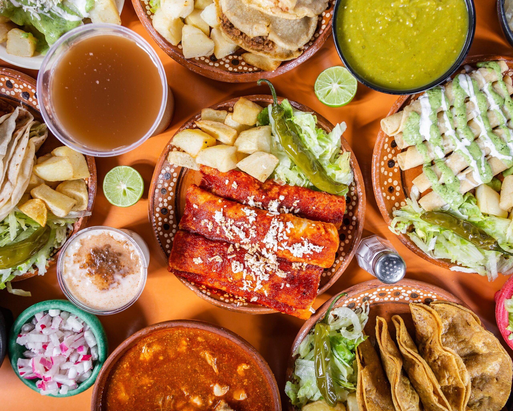

¡ Antojitos !
Sumérgete en la deliciosa variedad de sabores de Guatemala con nuestro surtido de antojitos guatemaltecos. Perfectos para compartir con amigos y familiares, estos platos tradicionales son una explosión de sabor que te transportará directamente a las calles de Guatemala.
Tamales: Sabrosos tamales envueltos en hojas de plátano y rellenos de pollo, carne de cerdo o verduras, sazonados con especias guatemaltecas únicas.
Champurradas: Galletas crujientes y dulces, elaboradas con harina, azúcar, mantequilla y canela, perfectas para acompañar un café o té.
Tostadas de Frijol y Aguacate: Tostadas crujientes cubiertas con una capa de frijoles refritos guatemaltecos, rodajas de aguacate fresco y una deliciosa salsa casera.
Enchiladas Guatemaltecas: Tortillas de maíz rellenas de pollo o carne, cubiertas con salsa de tomate guatemalteca, queso rallado, cebolla, lechuga, rábano y remolacha encurtida.
Rellenitos de Plátano: Bollos de masa de plátano rellenos de frijoles dulces, fritos hasta que estén dorados y crujientes.
Dobladas: Tortillas de maíz rellenas de carne o queso, dobladas y cocinadas hasta que estén crujientes por fuera y suaves por dentro.
Tacos Duros Guatemaltecos: Tortillas de maíz rellenas de carne sazonada y crujientes, acompañadas de una variedad de salsas caseras y guarniciones frescas.
Cada antojito está preparado con ingredientes frescos y auténticos, siguiendo recetas tradicionales que han pasado de generación en generación.
esta dispoible por tan solo Q65.00
